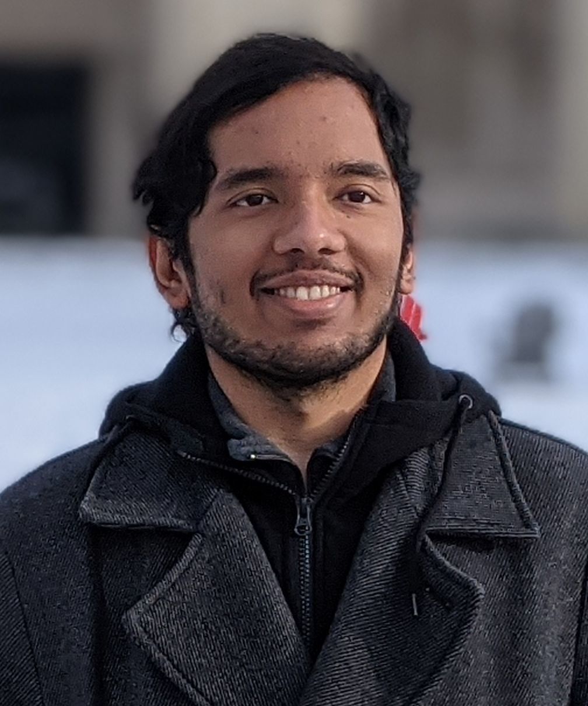

Vijay Rengarajan
Staff ML Engineer at Adobe, San Jose
urapvr@gmail.comCV
|  |
|
@Adobe
GenAI, Multimodal LLMs, VLMs, Computer Vision for Adobe products
@Meta Reality Labs
On-Device AI for Camera Pipeline in Wearables
- Developed machine learning models for Local Tone Mapping and 3D Color Look-up Table modules in the camera pipeline.
- Worked on machine learning models for RAW Pixel Desaturation/Hallucination.
- Worked on machine learning model development of FaceID-like periocular authentication for Head-Mounted Devices (HMDs).
- Developed cross-modal capabilities (HMD and mobile phone), and worked on synthetic data generation for biometric authentication.
- Developed a LoRA-based generative-AI model to generate 360-images based on text for immersive experiences in virtual reality (VR) devices.
@CMU
Computational High-speed Videography
- Developed a machine learning model to computationally render high-speed video from pre-designed low-speed short-long exposure captures.
- Mentored and worked with an undergraduate student to develop a strawberry freshness prediction model using subsurface scattering.
- Developed a surprise activity detection system which detects unknown activities in unknown capture environments using only a few query example activities revealed at run-time as a surprise.
Publications
|
Learning Neural Duplex Radiance Fields for Real-Time View Synthesis Ziyu Wan, Christian Richardt, Aljaz Bozic, Chao Li, Vijay Rengarajan, Seonghyeon Nam, Xiaoyu Xiang, Tuotuo Li, Bo Zhu, Rakesh Ranjan, and Jing LiaoInternational Conference on Computer Vision and Pattern Recogniton CVPR 2023 |
|
|
Programmable Spectral Filter Arrays using Phase Spatial Light Modulators Vishwanath Saragadam, Vijay Rengarajan, Ryuichi Tadano, Tuo Zhuang, Hideki Oyaizu, Jun Murayama and Aswin SankaranarayananICCP 2023 Paper |
|
|
Learning Spatio-Temporal Downsampling for Effective Video Upscaling Xiaoyu Xiang, Yapeng Tian, Vijay Rengarajan, Lucas Young, Bo Zhu, and Rakesh RanjanEuropean Conference on Computer Vision ECCV 2022 Paper Poster |
|
|
Fine-Grain Prediction of Strawberry Freshness using Subsurface Scattering Jeremy Klotz, Vijay Rengarajan, and Aswin SankaranarayananLarge-Scale Fine-Grained Food Analysis Workshop, ICCV 2021 Paper |
|
|
Photosequencing of Motion Blur using Short and Long Exposures Vijay Rengarajan, Shuo Zhao, Ruiwen Zhen, John Glotzbach, Hamid Sheikh, and Aswin SankaranarayananNew Trends in Image Restoration and Enhancement (NTIRE) Workshop, CVPR 2020 Paper Project Page |
|

|
Semi-supervised Learning of Camera Motion from a Blurred Image Nimisha T M, Vijay Rengarajan, and A.N.RajagopalanInternational Conference on Image Processing ICIP 2018 (Oral) Paper |

|
Image Registration and Change Detection under Rolling Shutter Motion Blur Vijay Rengarajan, A.N.Rajagopalan, R.Aravind, and Guna SeetharamanIEEE Transactions on Pattern Analysis and Machine Intelligence T-PAMI 2017, vol. 39, no. 10, pp. 1959-1972 Paper+Supplementary Project Page |
|
Unrolling the Shutter: CNN to Correct Motion Distortions Vijay Rengarajan, Yogesh Balaji, and A.N. RajagopalanInternational Conference on Computer Vision and Pattern Recogniton CVPR 2017 (Oral) Paper Slides Poster Project Page |
|
|
From Bows to Arrows: Rolling Shutter Rectification of Urban Scenes Vijay Rengarajan, A.N. Rajagopalan, and R. AravindInternational Conference on Computer Vision and Pattern Recogniton CVPR 2016 Paper Poster Project Page |
|

|
Rolling Shutter Super-resolution in Burst Mode Vijay Rengarajan, Abhijith Punnappurath, A.N. Rajagopalan, Guna SeetharamanInternational Conference on Image Processing ICIP 2016 Paper Project Page |
|
Rolling Shutter Super-resolution Abhijith Punnappurath, Vijay Rengarajan, and A.N. RajagopalanInternational Conference on Computer Vision ICCV 2015 Paper Supplementary Poster Project Page |
|

|
Illumination Robust Change Detection with CMOS Imaging Sensors Vijay Rengarajan, Sheetal B. Gupta, A.N. Rajagopalan, and Guna SeetharamanSPIE Defense + Security Symposium, International Society for Optics and Photonics SPIE 2015 (Oral) Paper Slides |

|
Motion Estimation and Classification in Compressive Sensing from Dynamic Measurements Vijay Rengarajan, A.N. Rajagopalan, and R. AravindInternational Conference on Pattern Recognition ICPR 2014 (Oral) Paper Slides |

|
Change Detection in the Presence of Motion Blur and Rolling Shutter Effect Vijay Rengarajan, A.N. Rajagopalan, and R. AravindEuropean Conference on Computer Vision ECCV 2014 Paper Poster Project Page |

|
Efficient Change Detection for Very Large Motion Blurred Images Vijay Rengarajan, Abhijith Punnappurath, A.N. Rajagopalan, and Guna SeetharamanCVPR Workshop on Registration of Very Large Images CVPRW 2014 (Oral) Paper Slides |
Professional Activities
Reviewer for TCI, TIP, TMM, ECCV, AAAI, CVPR, ICCV, ACCV, WACV, NeurIPS, ICVGIP